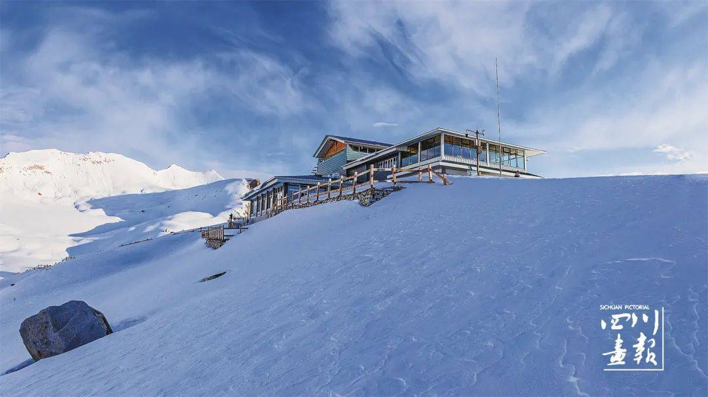
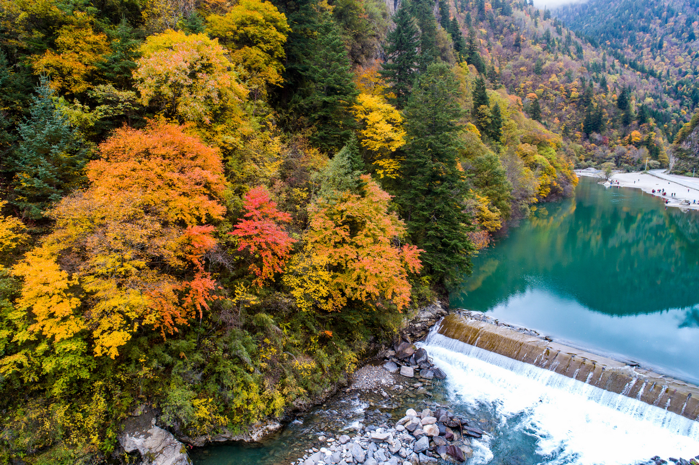

顶峰核心 · 海拔4860m
4860观景台与“最孤独咖啡馆”
坐落在世界最高客运索道终点的玻璃木屋咖啡厅。全景落地窗外是翻滚如海的浩瀚云海与万仞冰峰雪原。即使窗外零下二十度狂风呼啸，屋内温暖如春，手捧一杯热咖啡凝望无垠极境。
📸 出片机位： 坐靠二楼临窗吧台，逆光拍摄手持咖啡杯眺望窗外雪山云海；室外 4860m 标志石碑与国家地理相框合影。建议穿亮银色机能风或红色围巾对比极佳。

| 项目 | 挂牌价格 | 线上套票价 | 重要说明 |
|---|---|---|---|
| 景区大门票 | 旺季 ¥120 / 淡季 ¥60 |
旺季全套套票： ¥370 /人 淡季全套套票： ¥290~310 /人 |
旺季4月1日-11月30日；淡季12月1日-次年3月31日。 |
| 景区大巴观光车 | ¥70 /人 (往返) | 从大门至索道下站，单程 33 公里盘山路，车程约 45-50 分钟。 | |
| 4860高空索道 | ¥180 /人 (往返) | 世界海拔最高索道（下站3600m，上站4860m）。不坐索道无法登上冰川！ | |
| 4860咖啡馆消费 | 现磨咖啡 ¥45~60 /杯 (自选) | 二楼全景落地窗，打卡“全世界最孤独的咖啡馆”。 | |
坐落在世界最高客运索道终点的玻璃木屋咖啡厅。全景落地窗外是翻滚如海的浩瀚云海与万仞冰峰雪原。即使窗外零下二十度狂风呼啸，屋内温暖如春，手捧一杯热咖啡凝望无垠极境。

观光车沿途 · 森林湖泊观光大巴必经的低海拔湖泊。秋季湖畔落叶松全线金黄，碧蓝湖水倒映着远处雪峰。这里经常有成群不怕人的野生藏酋猴出没在栈道旁，充满生机野趣。